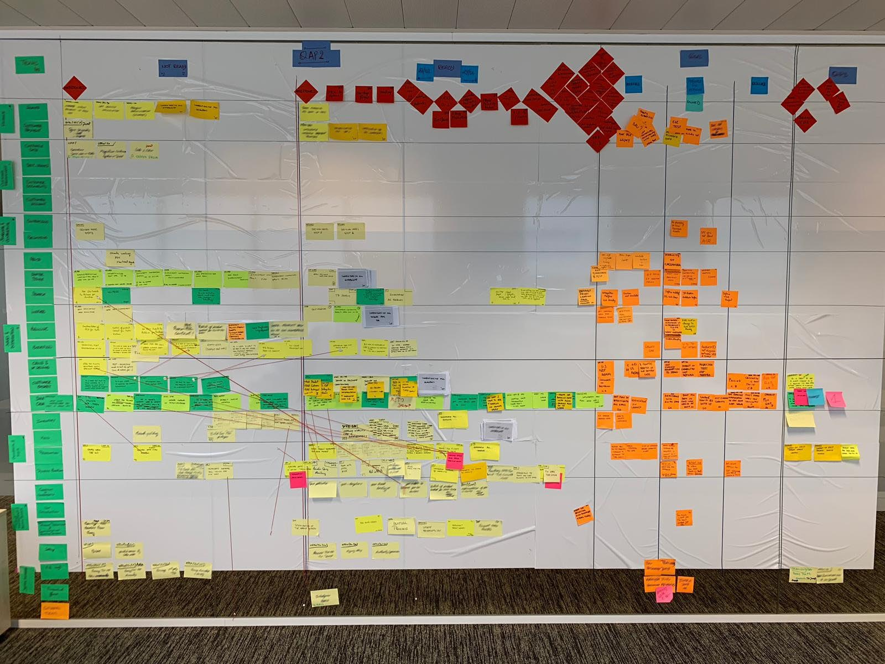
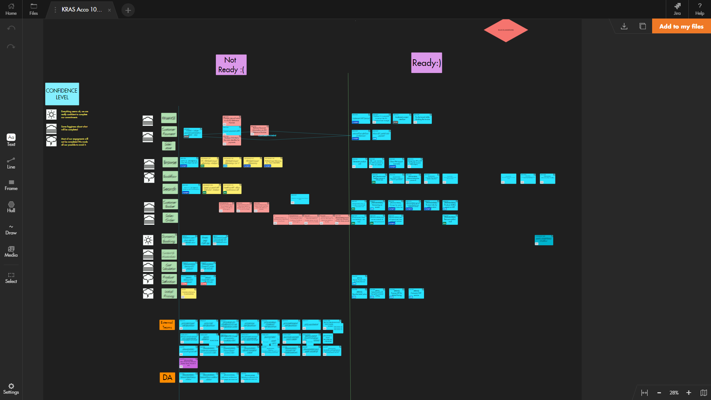
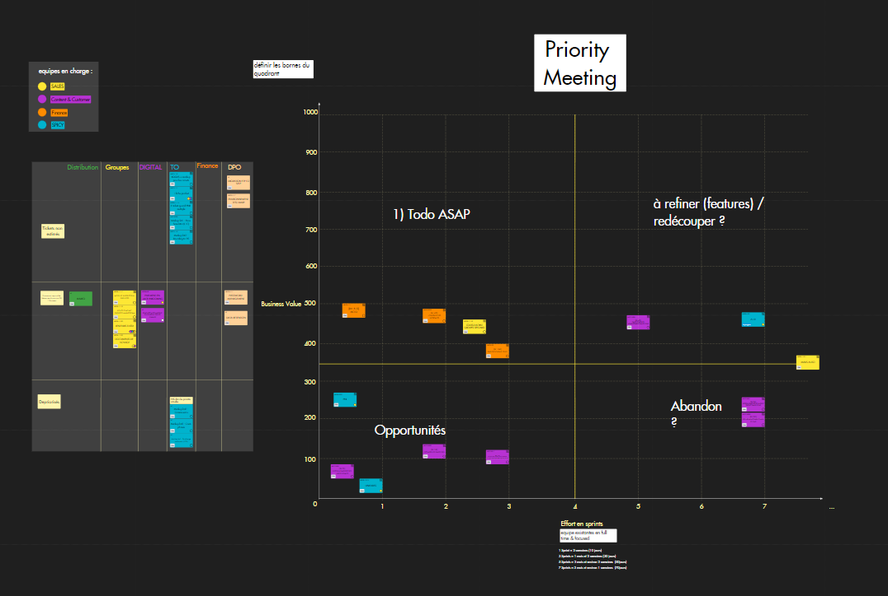

Managing a multi-site Paneuropean
development program visually
-
Julien LANGE Problem Solver, President
at WiScale France
Julien LANGE
Problem Solver, President
at WiScale France

With over 70,000 employees spread across 100 countries and a vast portfolio of 150 aircraft, over 400 hotels, and 18 cruise ships, TUI is one of the largest leisure, travel, and tourism companies in the world. In 2019, the Anglo-German multinational served 21 million customers to generate a massive $19B in revenue.
Over the last three years, the group has taken some big steps to unify its IT infrastructure and streamline end-to-end operations. After many years of M&A activity, the group’s IT infrastructure had become an inefficient hodgepodge of heterogeneous and barely interoperable sub-systems. This comes at a time when TUI has worked extensively at automating and maintaining the integrity of information exchange with airports and other airlines.
The project team responsible for overseeing this effort is made up of 80 people divided into 23 smaller development teams (in Belgium, France, Germany, the Netherlands, and the UK), led by one proxy product owner in each Team and supported by a scrum master shared across the teams.
In April 2018, TUI France appointed Julien as a Scrum Master consultant for two development teams based in France.
Every three months, around 100 people, which included the project team and other key stakeholders (business owners, business experts, etc.), would meet in Belgium for two-day workshops to discuss ongoing sub-projects, remove obstacles or barriers to success, and set the roadmap for the next three months. During these workshops, they regularly used a fifteen-meter wall to build what looks like a huge program board with sticky-notes to coordinate and track the advancement across all teams.
In the project’s early days, they would take pictures of the Kanban board at the end of each workshop to ensure nothing was forgotten. Then in the time between the end of one session and the beginning of another, they would exchange new information by phone or email, at which point someone would need to take new photos of the updated program board and send them off to all teams. “It was just impossible to handle,” admitted Julien.
After going through this inefficient process a few times, Julien proposed using Draft’s infinite blackboard to replicate the massive, real-life program board wall digitally as a way of keeping teams in sync more effectively between two workshop sessions. This has, in essence, allowed them to build a vast project management artifact that can seamlessly evolve alongside the team’s progress against various project milestones.
This helped them become acutely aware of different expectations and needs across various stakeholders. For instance, the program manager only ever needed to follow up on project status at a high-level without getting lost in the minor details. Similarly, business owners were fine with having only an epic-level view of the project. Product owners, on the other hand, needed to get into more detail by setting and tracking team progress at the user story-level.
Because of these various needs and the different level of detail required by different stakeholders, they decided to split the big, overarching board into smaller and more specific project management artifacts to form an interconnected, three-layer visual management artifact that could give everyone involved access to the right level of detail they needed throughout the project’s lifecycle.
For example, an epic in one board can be associated with details available on another board without any critical information being “lost in translation.” In other words, all the underlying user stories that come together to make up a given project could now be connected seamlessly, even though different bits of information may have been split up across different boards. “We’ve built a multi-layer, multi-teams, multi-site visual management system,” exclaimed Julien.
“During the whole lockdown period, Draft was essential to continue business as usual. As it is visual and very easy-to-use, it was an ideal environment for business and IT teams to keep on collaborating efficiently,” says Julien.
Then, TUI’s product owner used Draft as a flexible story mapping tool to document project needs and create appropriate user stories while also allowing them to define and prioritize their backlog wisely (all linked to Confluence). Julien describes the process like this: “To begin, stakeholders estimate epics’ business value and development teams macro-estimate the effort needed. And then, we place those epics in a quadrant to identify the ones with the better value-to-effort ratio. This Business Value / Effort matrix has become a central tool in our backlog prioritization process.”
Julien also used Draft for customized remote retrospectives and ceremonies of product backlog refinement. For instance, Julian appreciates playing a Split Poker card game to slice out user stories and runs Example Mapping sessions: “It’s an efficient way to list out pending questions about a given user story and share that information with concerned business owners.”
Despite the COVID-19 pandemic’s massive impact on the tourism industry, as a whole, and on TUI’s business, in particular, having already pivoted the company’s operations towards a more digital future many months before the confinement period began has allowed the group to overcome the many challenges faced by other companies as they were forced to make remote work the new normal.